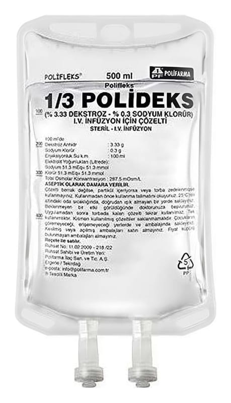

Polifleks 1/3 Polideks (%3,33 Dekstroz - %0,3 Sodyum Klorür) I.V. İnfüzyon İçin Çözelti, 1000 ml Setsiz

Ne için kullanılır
KT · Bölüm 1POLİFLEKS 1/3 POLİDEKS vücut için yaşamsal önemi olan sodyum, klorür iyonları ile glukoz içeren damar içi yoldan kullanılan renksiz, berrak, partikülsüz, kokusuz, steril bir çözeltidir.
POLİFLEKS 1/3 POLİDEKS, 100, 150, 250, 500 ve 1000 mililitre hacminde PVC ve PP torbalarda sunulmuştur. Bu esnek torbaların dışında koruyucu bir dış kılıf bulunur. Setli ve setsiz iki formu bulunmaktadır.
Vücutta kaybedilen sıvının ve tuzun yerine konmasında işe yarar. Ayrıca vücudun enerji ihtiyacının bir bölümünü de karşılar.
Bu ilacı kullanmaya başlamadan önce bu KULLANMA TALİMATINI dikkatlice okuyunuz, çünkü sizin için önemli bilgiler içermektedir. • Bu kullanma talimatını saklayınız. Daha sonra tekrar okumaya ihtiyaç duyabilirsiniz. • Eğer ilave sorularınız olursa, lütfen doktorunuza veya eczacınıza danışınız. • Bu ilaç kişisel olarak sizin için reçete edilmiştir, başkalarına vermeyiniz. • Bu ilacın kullanımı sırasında, doktora veya hastaneye gittiğinizde doktorunuza bu ilacı kullandığınızı söyleyiniz. • Bu talimatta yazılanlara aynen uyunuz. İlaç hakkında size önerilen dozun dışında yüksek veya düşük doz kullanmayınız.
Vücudun susuz ve tuzsuz kalması (dehidratasyon) durumunun tedavisinde ve bu durumun oluşmasını önlemek için kullanılır. Özellikle terleme, kusma ve ameliyat vb. gibi durumlarda mide sıvılarının dışarı çekilmesi gibi nedenlerle vücuttaki klorür adlı bir maddenin kaybının, sodyum adlı maddenin kaybına eşit ya da daha fazla olduğu durumlarda, kan nakline ek olarak ayrıca sıvı verilmesi istenen hastalarda, ameliyat öncesi ve sonrası bakımında, böbrek fonksiyonlarını başlatabilecek bir ilaç olarak tercih edilir.
POLİFLEKS 1/3 POLİDEKS, konsantre formda bulunan bazı damar içi uygulamaya uygun ilaçların damar içine uygulanmadan önce seyreltilmesi amacıyla da kullanılmaktadır.